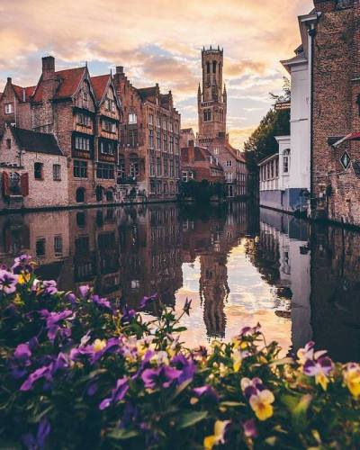
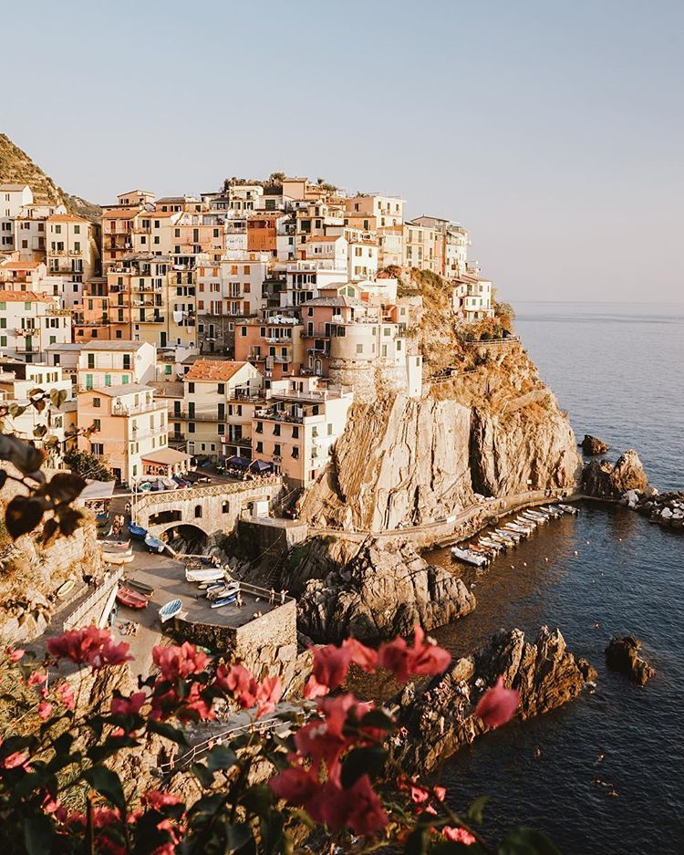
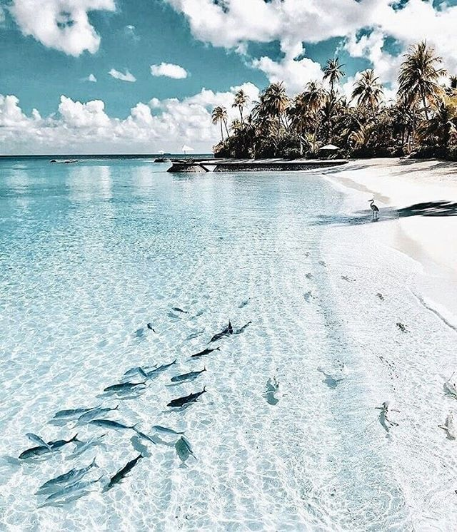

Traveling around the world is AWESOME!! But travelling with the person you love is a way to discover your passion. These places are incredible for honeymoons, Valentine's day or just to travel with your lover. No matter what, these places will make you fall in love with each other even more!
Bruges, is one of the MOST ROMANTIC cities in Europe! It is called "Venice of the North". You can cross the city center while ridding on the cities dreamy canals, with your lover!
In The Isle Of Skye you can see some amazing mountain views and coastal scenery. You can spend the day hiking or doing the Dunvegan Castle tour. A romantic walk by the shore, or just sitting together watching the sunset behind the hills, is the most romantic way to spend the end of the day.

In Cinque Terre you can do the rocky and panoramic footpaths, that will you with your mouth open! Everything about this place is romantic: The wine, the sea, and the colorful houses!
The Maldives are between southeast India and Sri Lanka. You will be able to see the white sand beaches, see the incredible marine life, and a clear blue sea, you won't believe the color is real! The colors here will remind you of a painting.
